第四课：这个工作是他帮我介绍的 (Урок 4: Эту работу он помог мне найти)
课文 (Текст)
1. 在教室 (В классе)
A: 生日快乐！这是送给你的！
A: С днём рождения! Это тебе!
B: 是什么？是一本书吗？
B: Что это? Это книга?
A: 对，这本书是我写的。
A: Да, эту книгу написал я.
B: 太谢谢你了！
B: Большое спасибо!
生词 (Новые слова):
1. 生日 (shēngrì) сущ. день рождения
2. 快乐 (kuàilè) прил. счастливый, весёлый
3. 给 (gěi) гл./предл. давать; для, кому-л.
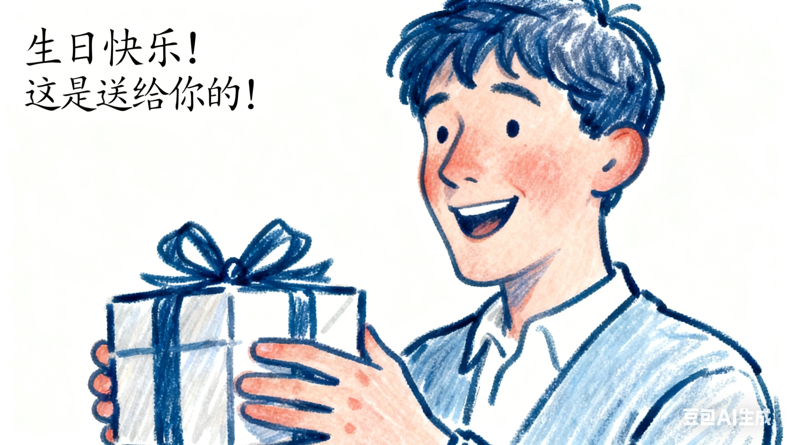
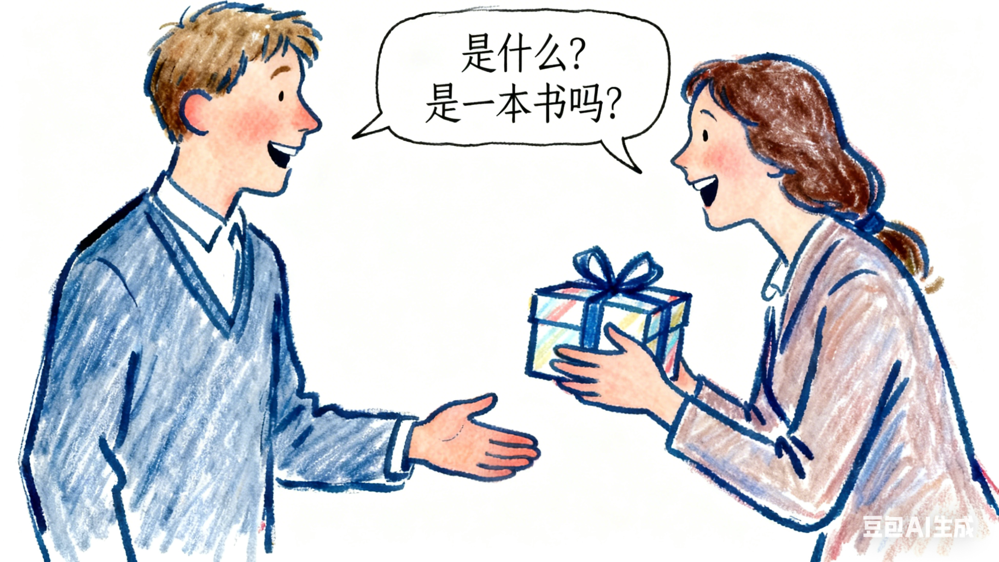
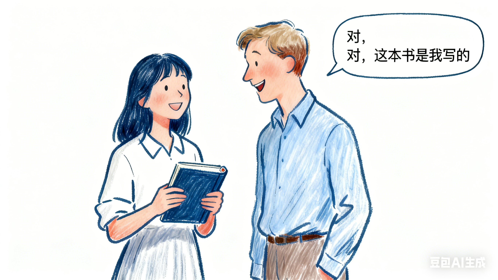
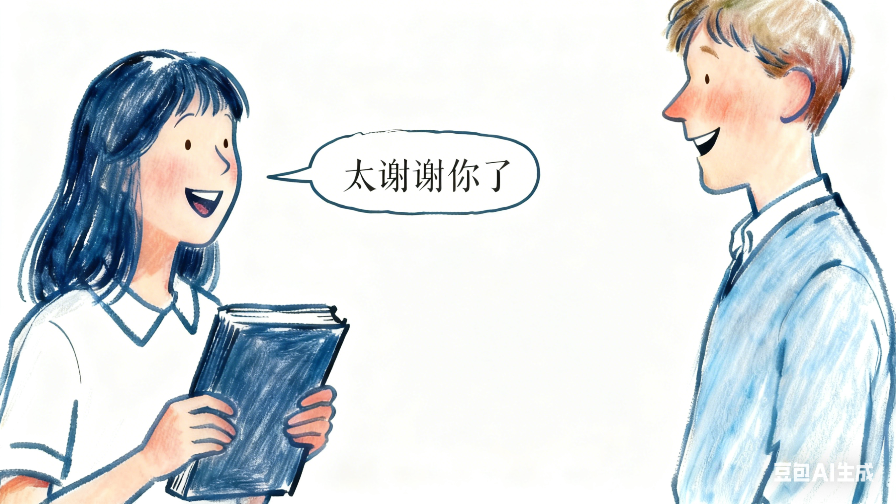
2. 在家里 (Дома)
A: 早上有你一个电话。
A: Утром тебе звонили.
B: 电话是谁打的？
B: Кто звонил?
A: 不知道，是儿子接的。
A: Не знаю, сын ответил.
B: 好，晚上我问一下儿子。
B: Хорошо, вечером я спрошу у сына.
生词 (Новые слова):
4. 接 (jiē) гл. принимать, отвечать (на звонок)
5. 晚上 (wǎnshang) сущ. вечер, вечером
6. 问 (wèn) гл. спрашивать
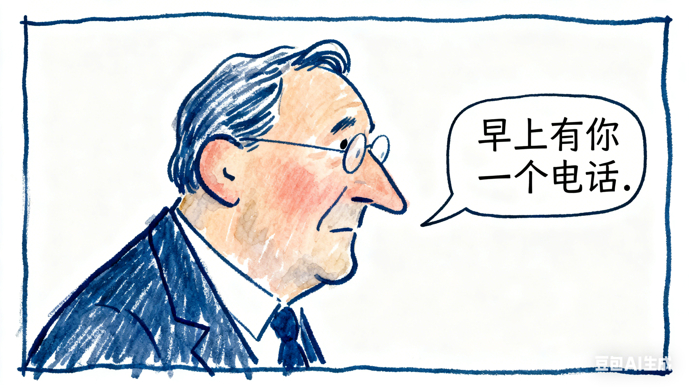
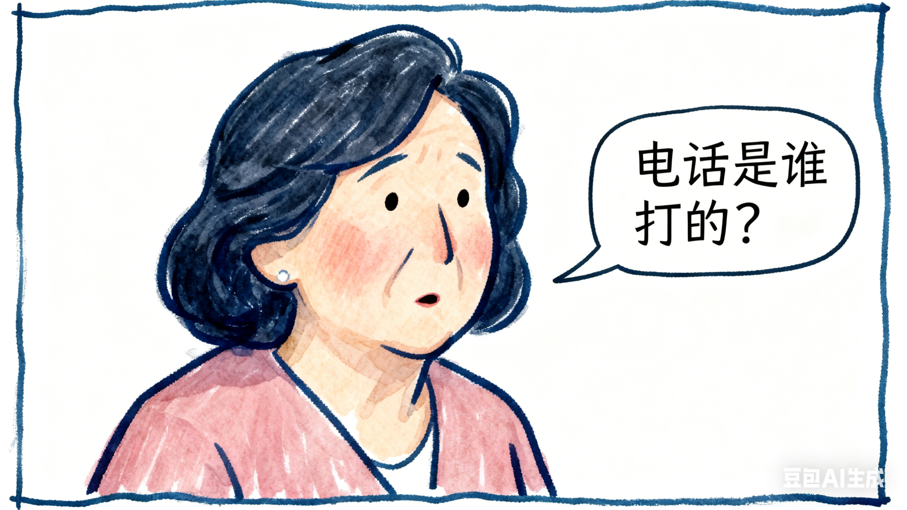
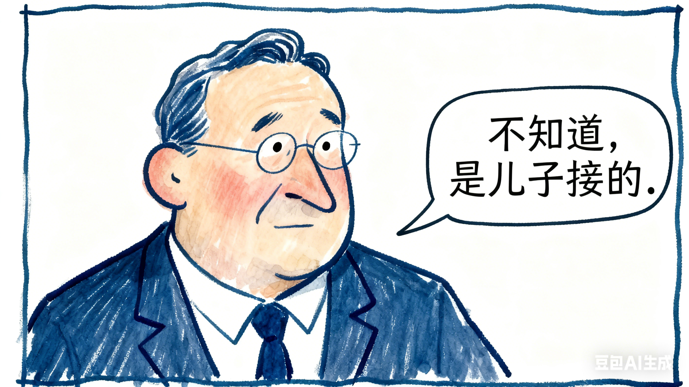
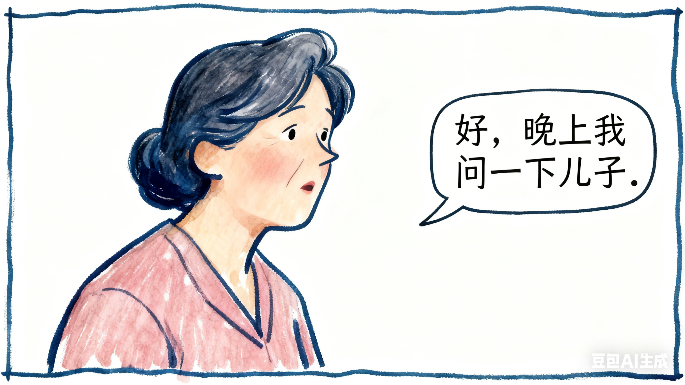
3. 在运动场 (На спортивной площадке)
A: 你喜欢踢足球吗？
A: Тебе нравится играть в футбол?
B: 非常喜欢。
B: Очень нравится.
A: 你是什么时候开始踢足球的？
A: Когда ты начал играть в футбол?
B: 我十一岁的时候开始踢足球，已经踢了十年了。
B: Я начал играть в футбол, когда мне было 11 лет. Уже играю десять лет.
生词 (Новые слова):
7. 非常 (fēicháng) нареч. очень
8. 开始 (kāishǐ) гл. начинать
9. 已经 (yǐjīng) нареч. уже
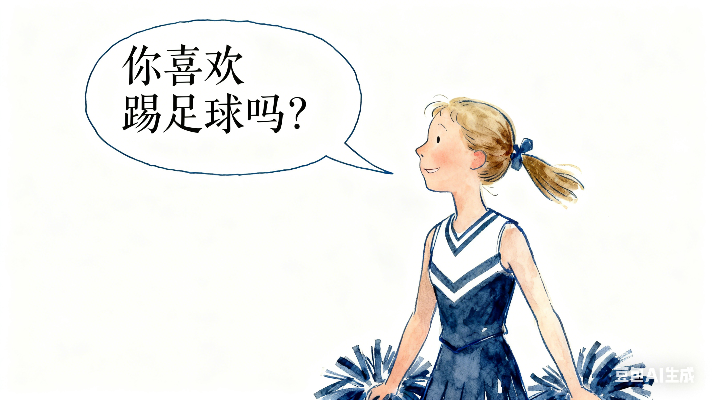
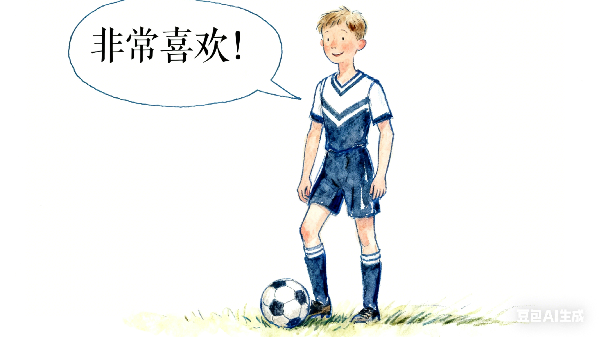
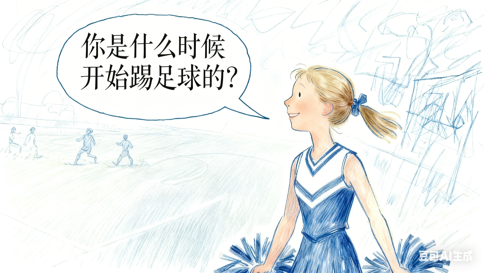
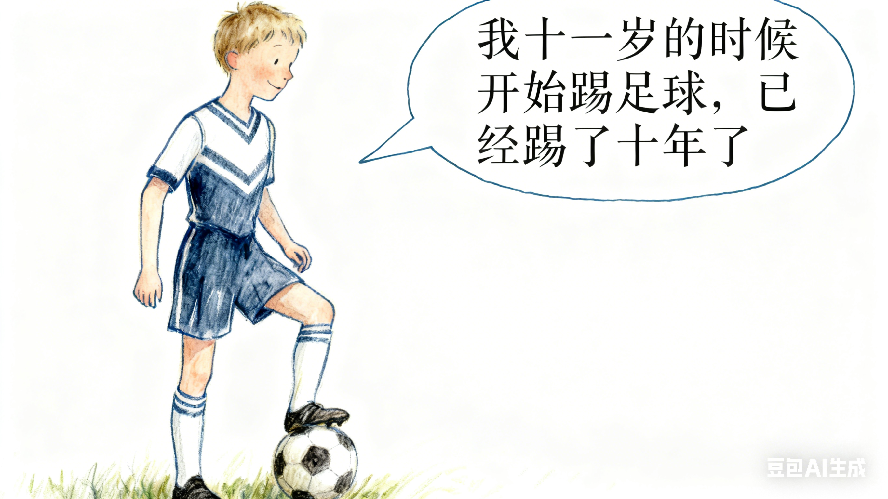
4. 在公司 (В компании)
A: 你在这儿工作多长时间了？
A: Как долго ты здесь работаешь?
B: 已经两年多了，我是2011年来的。
B: Уже больше двух лет. Я приехал в 2011 году.
A: 你认识谢先生吗？
A: Ты знаешь господина Се?
B: 认识，我们是大学同学，这个工作是他帮我介绍的。
B: Да, мы вместе учились в университете. Эту работу он мне порекомендовал.
生词 (Новые слова):
10. 长 (cháng) прил. длинный, долгий
11. 两 (liǎng) числ. два
12. 帮 (bāng) гл. помогать
13. 介绍 (jièshào) гл. знакомить, представлять, рекомендовать
注释 (Примечания)
1. “是……的”句，强调施事 (Конструкция “是……的” для выделения исполнителя действия)
在已经知道事情发生的情况下，可以用“是……的”强调动作的发出者。
Когда уже известно, что действие произошло, можно использовать конструкцию «是……的», чтобы подчеркнуть, кто именно совершил это действие.
| Object (Объект) | 是 | 谁 (Кто) | 动作 (Действие) | 的 |
|---|---|---|---|---|
| 这本书 (эта книга) | 是 | 我 (я) | 买 (купил) | 的。 |
| 晚饭 (ужин) | 是 | 妈妈 (мама) | 做 (приготовила) | 的。 |
| 电话 (звонок) | 是 | 谁 (кто) | 打 (сделал) | 的？ |
否定形式在“是”的前边加“不”。
В отрицательной форме «不» ставится перед «是».
例如 (Например):
这个汉字不是大卫写的。
Этот иероглиф написал не Давид.
电话不是我接的。
На звонок отвечал не я.
2. 表示时间：……的时候 (Указание времени: “……的时候”)
“数量+的时候” 表示时间。
«Число + 的时候» указывает на время.
例如 (Например):
(1) 我十八岁的时候一个人来到北京。
(1) Когда мне было 18 лет, я один приехал в Пекин.
(2) 我十一岁的时候开始踢足球。
(2) Я начал играть в футбол, когда мне было 11 лет.
“动词+的时候” 也表示时间。
«Глагол + 的时候» также указывает на время.
例如 (Например):
(1) 我睡觉的时候，我妈妈在做饭。
(1) Когда я спал, моя мама готовила еду.
(2) 麦克到学校的时候下雨了。
(2) Когда Майк пришёл в школу, пошёл дождь.
3. 时间副词“已经” (Наречие времени “已经”)
“已经”表示动作完成或者达到某种程度。
«已经» (уже) указывает на то, что действие завершено или достигло определённой степени.
例如 (Например):
(1) 王老师已经回家了。
(1) Учитель Ван уже вернулся домой.
(2) 我的身体已经好了。
(2) Я уже выздоровел.
(3) (足球我)已经踢了十年了。
(3) (В футбол я) уже играю десять лет.